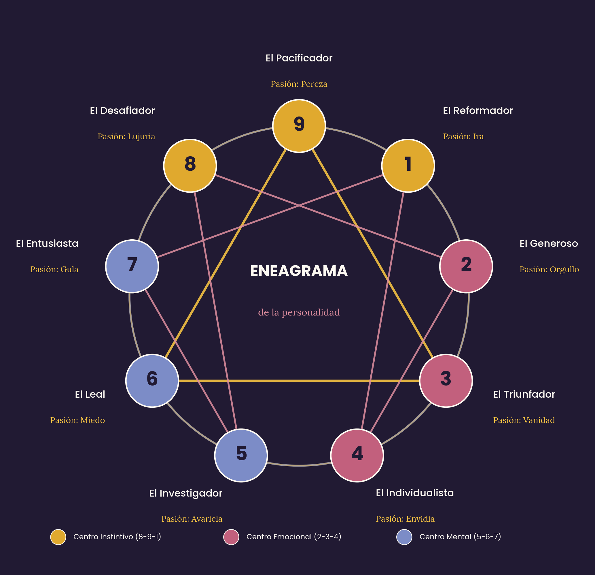

Antes de entrar a un taller presencial o virtual, este espacio te invita a asomarte a tu Eneatipo — el patrón con el que tu mente aprendió a organizar el mundo — y a tu Herida de la Infancia predominante — la marca emocional más temprana con la que tu niño interior aprendió a protegerse.

Para que el resultado tenga sentido, los tests de autoindagación (Genealogía, Reconóce TE y Regresando al Vientre) se realizan con acompañamiento: Carlos te los habilita después de tu consulta, y están incluidos para quienes son miembros del club.
Ahí desarrollamos cada eneatipo y cada herida en detalle: cómo se comportan en la infancia, la juventud y la adultez, por qué se construyeron, y ejercicios de resignificación con meditación y observación consciente.
Ver el Módulo III completo